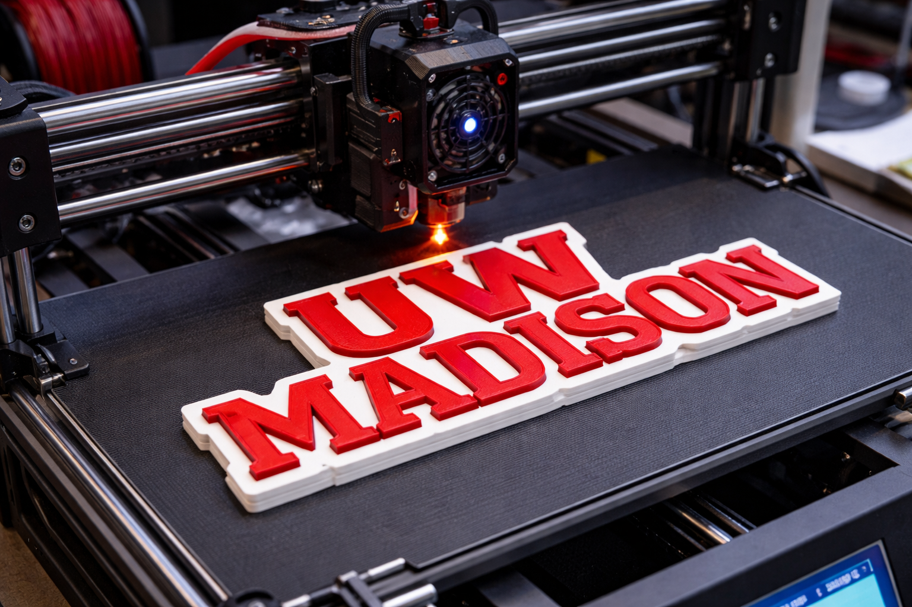
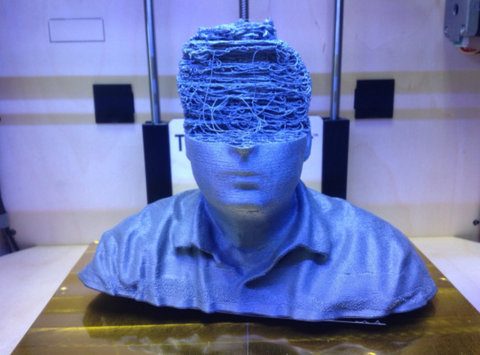
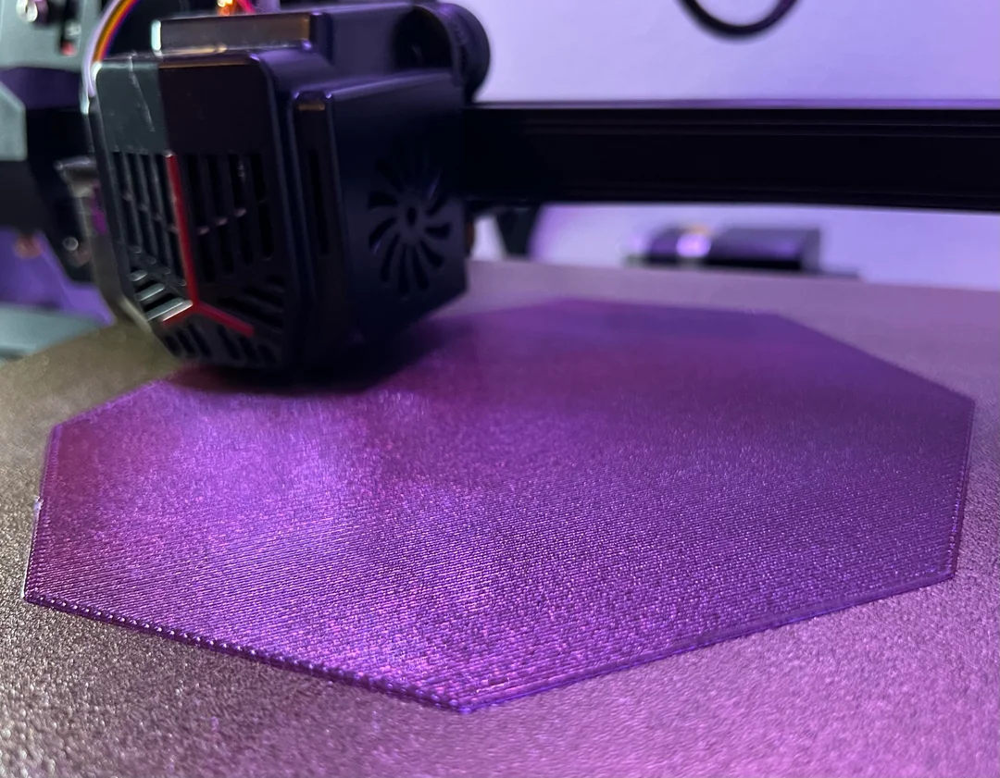
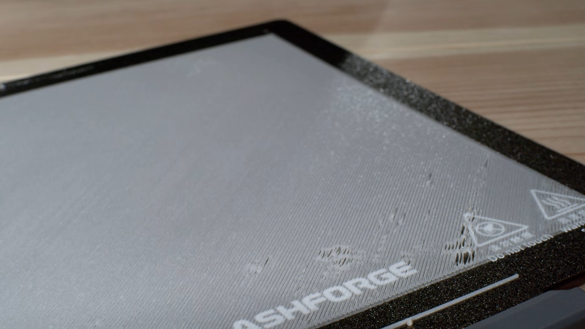
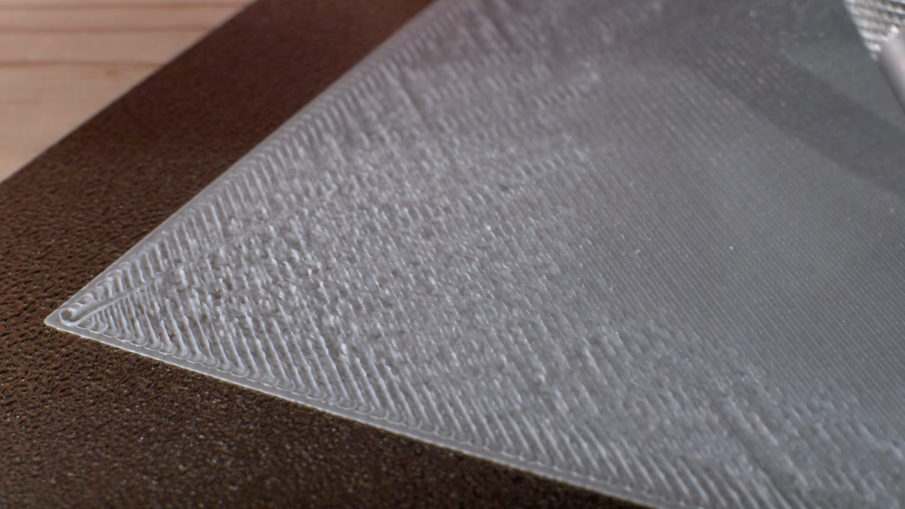
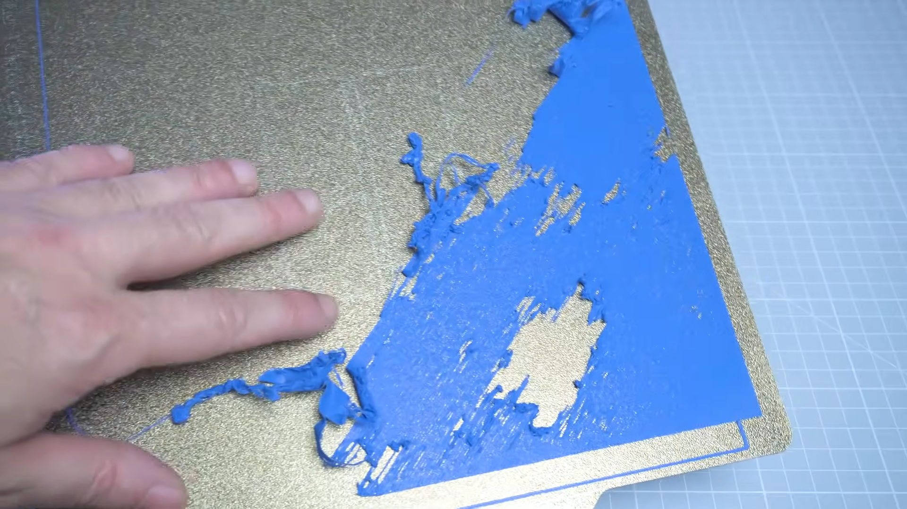
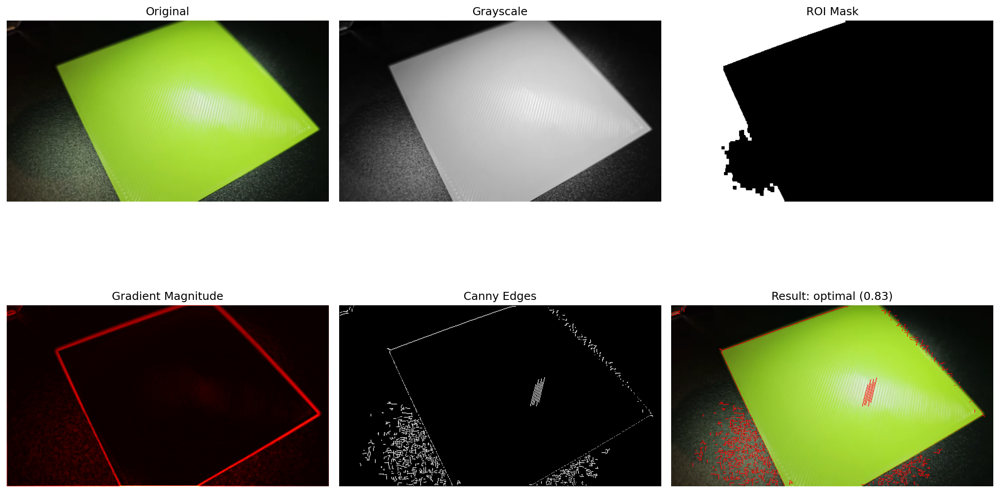
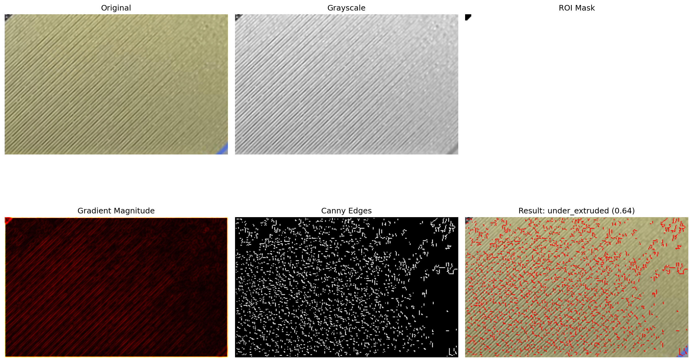
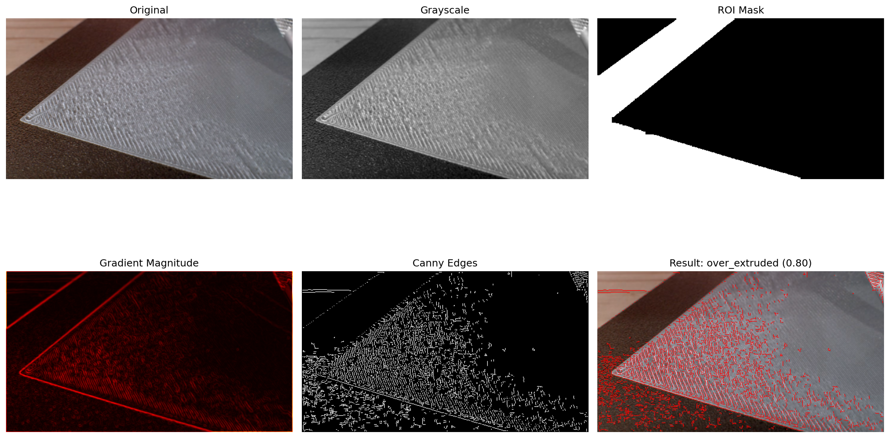
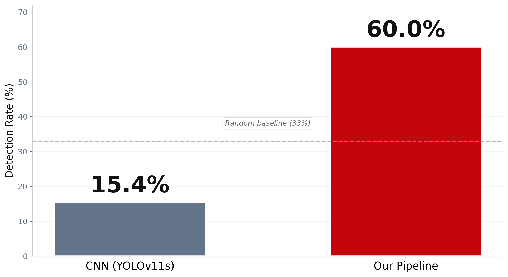

Jake Clifford · Tyler Caspar · Spring 2026 · UW–Madison
What is 3D Printing?
Fused-deposition 3D printers extrude molten plastic in thin layers to build a part from the bottom up.
The technology has put low-cost custom fabrication in the hands of hobbyists, engineers, and entire industries.
Plastic is extruded layer by layer to form a 3D part.
Cheap and accessible — desktop printers cost a few hundred dollars.
Used for prototyping, medical and dental devices, custom tooling, and small production runs.
A single print can take anywhere from a few minutes to several days.

The Problem
It's great — until it isn't. When a print goes wrong, the failure can be invisible for hours, and the cost is real.

The cost of a failed print
Lost time — a single failed print can throw away hours or days of machine time.
Wasted filament — every failed layer is plastic that has to be scrapped.
Commercial scrap — at production scale, these losses compound across machines.
Missed deadlines — a quiet failure overnight is a deliverable pushed by a day.
The State of 3D-Print Defect Detection
Existing tools focus on dramatic, late-stage failures — by the time they fire, the damage is already done.
Trained on thousands of catastrophic-failure images
Reactive — they trigger after the print is already ruined
Most failure modes can only be observed late in a print
The gap: nothing on the market catches problems
proactively, at the earliest possible stage — the very first layer.
Catch It at Layer One
The first layer tells you almost everything about whether the rest of the print will succeed.
A good first layer is uniform, well-bonded, and free of gaps. A bad first layer is a print that's already failed —
even if the printer keeps going for hours.

Optimal

Under-extruded

Over-extruded

If we don't catch it…
Our goal: classify the first layer of a print as
optimal, under-extruded, or over-extruded from a single top-down image —
using only classical computer vision, with no deep learning in the pipeline.
Our Approach
A pipeline that takes a single top-down image of a print's first layer, extracts a
6-dimensional feature vector, and classifies the layer as optimal, under-extruded, or over-extruded.
Model iterations
v1 · Baseline
26%
Hardcoded threshold
v2 · Multi-Feature
48%
v5 · Mahalanobis
52%
v7 · Line-Spacing
60%
6 Features → One Classification
Each input image is reduced to a 6-dimensional feature vector. The classifier uses the
Mahalanobis distance to the learned class means in this 6-D space — the closest mean wins.
Fill density — % of ROI that is an edge pixel.
Gradient entropy — spread of edge directions.
Gradient kurtosis — peakedness of direction histogram.
Edge-to-gradient — edges vs. strong gradients.
Edge density CV — variance across image patches.
Line-spacing uniformity ★ — regularity of extrusion lines (largest single iteration impact: +20% under-extruded recall).
The Mahalanobis classifier
d(x, μc) = √( (x − μc)T Σ−1 (x − μc) )
Distance from feature vector x to class mean μc, scaled by inverse covariance Σ−1.
How we trained and classified
Training is a one-time computation done on the labeled dataset. For every training image we run the same
feature-extraction pipeline shown above to produce one numeric vector per image. We then group the vectors
by their ground-truth class — optimal, under-extruded, or over-extruded — and
average them to get a class mean μc. We also pool the residuals (each vector minus its
class mean) and compute a single covariance matrix Σ that captures how the features co-vary across
the dataset. The trained model is just those three class means and the inverse covariance Σ−1.
Classification of a new image follows the same path: run the image through the pipeline to compute the same
set of features, then evaluate the Mahalanobis distance from that feature vector to each class mean using
the equation above. The class with the smallest distance is the predicted label, and the gap between the
closest and second-closest distance gives us a confidence score.
Results
On our 65-image dataset the pipeline labels 39 of 65 first-layer images correctly —
a 60.0% accuracy that beats both random (33%) and the largest-class baseline (37%).
39 / 65
Correct classifications
60.0%
Overall accuracy
37%
Largest-class baseline
Confusion matrix
Pred. Optimal
Pred. Under
Pred. Over
Actual Optimal
17
4
3
Actual Under
5
11
4
Actual Over
4
6
11
Diagonal entries are correct predictions. Random baseline = 33%; largest-class baseline = 37%.
Detection algorithm in action

End-to-end visualization on a sample first-layer image: input → masking → edges → gradient → FFT → label.

Under-extruded example, correctly classified with 0.83 confidence.

Over-extruded example, correctly classified with 0.75 confidence.
Comparison to a CNN Baseline
We trained a YOLOv11s baseline on roughly 9,000 images of common 3D-print defects to see how an
off-the-shelf deep model would perform on the same first-layer images we evaluate on.

Why the CNN underperforms here
The YOLOv11s baseline was trained on images of spaghetti, stringing, and zits —
catastrophic, late-stage failure modes that physically cannot occur on the very first layer.
The CNN isn't wrong — it's answering a different question.
Our approach asks the right question at the right time:
is this first layer healthy, under-extruded, or over-extruded?
What We Learned
Data challenges
Top-down first-layer images are rare on the public web.
Lighting, color, and bed material vary print-to-print.
Our 65-image dataset was hand-curated from YouTube footage.
Key insight
Dataset size, not feature design, was the real bottleneck.
Around 8 features is the practical ceiling at this dataset scale.
Adding more features past v7 caused the model to overfit.
Future work
Larger dataset.
Printer firmware integration.
Mobile app.
Resources & Deliverables
Everything you need to inspect, run, or grade this project — including the proposal, mid-term report,
in-class presentation, and full source code.